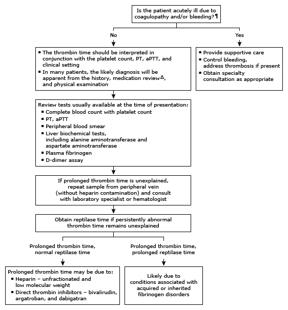

Initial evaluation of prolonged thrombin time in adults*

This algorithm is intended for use with additional UpToDate content on the clinical use of coagulation tests and low fibrinogen.
PT: prothrombin time; aPTT: activated partial thromboplastin time. * In most cases, the normal range for the thrombin time is approximately 14 to 19 seconds but can vary by laboratory and reagent instrument combination. Interpretation of a specific abnormal result should be based on the reference range reported with that result. ¶ The thrombin time is not used as an initial screening test for hemostatic abnormalities. It is useful for evaluating individuals with prolongation of both PT and aPTT. Δ Heparin and direct thrombin inhibitors prolong the thrombin time.